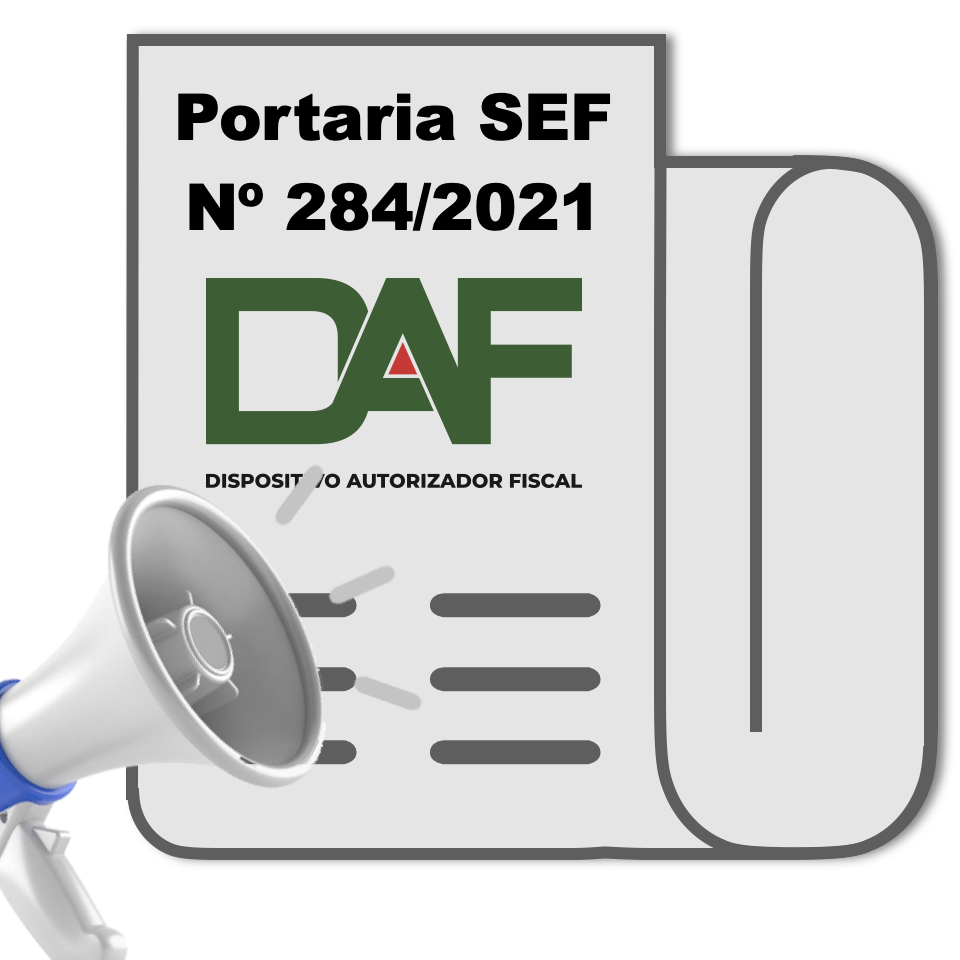
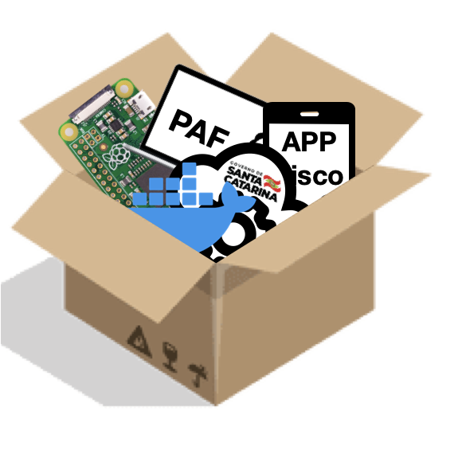

O Projeto DAF
-
outubro de 2018
Santa Catarina passa a exigir que a emissão e a autorização da NFC-e, modelo 65, seja realizada por meio de equipamento desenvolvido e autorizado para uso fiscal
-

ETEC
março de 2020
Assinatura do contrato de Encomenda Tecnológica (ETEC) entre o IFSC e a SEF
-
Consulta Pública
novembro de 2020
Lançamento da consulta pública da especificação DAF
-

Portaria SEF Nº 284/2021
julho de 2021
Publicação da Especificação Técnica de Requisitos - Versão 1.0.0
-

Kit de Desenvolvimento
abril de 2022
Publicação dos Repositórios no GitHub com o kit de desenvolvimento